Traditionellt Skomakeri & Kvalitetshantverk
Välkommen till Tväråntre. Vi är ett genuint skomakeri som värnar om hantverket och miljön. Istället för att kasta, hjälper vi dig att ge dina favoritskor, väskor och läderprodukter ett nytt liv. Med precision och noggrannhet utför vi allt från enklare klackningar till avancerade reparationer.
Klackning, sulning och lagning av alla typer av skor – från eleganta finskor till tåliga kängor.
Vi reparerar väskor, bälten och andra läderprodukter. Vi erbjuder även professionell puts och vård.
Vi reparerar kläder, tält och utrustning samt utför gardinsömnad och omklädning av mindre möbler. Vi erbjuder även professionell anpassning och lagning av alla typer av textilier.
Fredag - Söndag: 12:00 - 18:00
Övriga tider kontakta via telefon.